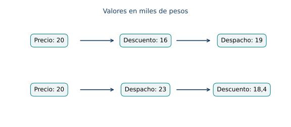
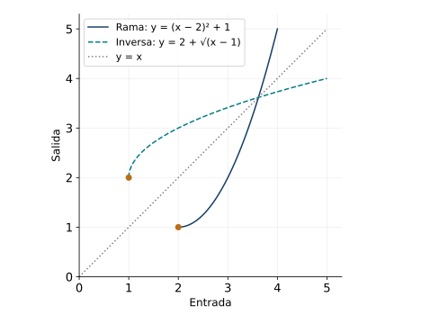
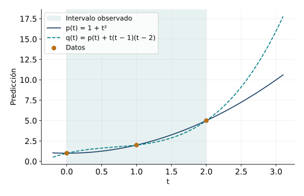
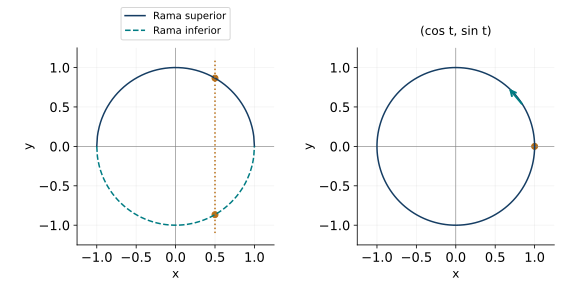

Composición, inversión y modelización funcional
← Funciones trigonométricas y modelos periódicos · Índice del libro · Siguiente →
Una empresa aplica un descuento del veinte por ciento al precio de un producto y cobra después una tarifa fija de tres mil pesos por el despacho. Otra empresa anuncia los mismos dos cambios, en el orden contrario. ¿Producen el mismo cobro? Si conocemos el total pagado, ¿podemos reconstruir el precio inicial? La primera pregunta exige seguir una cadena de operaciones; la segunda pide recorrerla hacia atrás. Ambas dependen del orden y de los valores que cada etapa admite.
Las familias funcionales estudiadas en los capítulos anteriores permiten construir cadenas mucho más variadas. Una temperatura produce una señal eléctrica; la señal se transforma en una lectura; una calibración convierte esa lectura en una estimación. La fórmula final reúne varias decisiones: qué entra, qué sale, qué restricciones conserva y qué parte del fenómeno representa. En este capítulo trataremos esas decisiones como parte del razonamiento matemático.
Seguir una salida hasta la siguiente entrada
Sean \(g:D_g\to B\) y \(f:D_f\to C\). La composición \(f\circ g\) asigna a cada entrada admisible \(x\) el valor \(f(g(x))\). Su dominio natural es
\[D_{f\circ g}=\{x\in D_g:g(x)\in D_f\}.\]
La función interior actúa primero. Para componer en todo \(D_g\) basta que \(g(D_g)\subseteq D_f\). Cuando esta inclusión falla, la misma regla puede definir una composición sobre el subconjunto indicado. Llamaremos imagen de un conjunto \(S\subseteq D_g\) al conjunto \(g(S)=\{g(x):x\in S\}\). La preimagen \(g^{-1}(T)=\{x\in D_g:g(x)\in T\}\) está definida para cualquier conjunto \(T\) de salidas; esta notación designa aquí un conjunto, incluso cuando \(g\) carece de función inversa.

Propiedades del encadenamiento
| Propiedad | Hipótesis y alcance |
|---|---|
| Dominio natural | Se exige \(x\in D_g\) y \(g(x)\in D_f\) para evaluar \(f\circ g\). |
| Identidad | \(\operatorname{id}(x)=x\) conserva los valores; \(f\circ\operatorname{id}_{D_f}=f\) y \(\operatorname{id}_{C}\circ f=f\) para \(f:D_f\to C\). |
| Asociatividad | \(h\circ(f\circ g)=(h\circ f)\circ g\) donde \(x\), \(g(x)\) y \(f(g(x))\) cumplen las tres restricciones. |
| Orden de las etapas | La igualdad \(f\circ g=g\circ f\) requiere comprobación de valores y dominios. |
Pruebas. Véase «Encadenamiento, dominio y asociatividad» en el apéndice de demostraciones.
Problema 1. Descuento y despacho
Un producto cuesta \(p\geq0\) miles de pesos. Se aplican \(d(p)=0{,}8p\) y \(s(p)=p+3\). Hallar ambos cobros y determinar cuándo coinciden.
Solución. Descontar y despachar produce \((s\circ d)(p)=0{,}8p+3\). Despachar y descontar produce \((d\circ s)(p)=0{,}8p+2{,}4\). La diferencia es \(0{,}6\) miles de pesos para toda entrada admisible. Por tanto, los cobros difieren en seiscientos pesos y no coinciden. Para \(p=20\), los totales son \(19\) y \(18{,}4\) miles. La diferencia constante expresa que la segunda empresa también descuenta una parte del despacho.
Problema 2. Una misma regla con dominios distintos
Sean \(g(x)=x^2\), definida en \(\mathbb R\), y \(f(u)=\sqrt u\), definida en \([0,\infty)\). Determinar las dos composiciones como funciones.
Solución. Todo cuadrado pertenece al dominio de la raíz; por ello \((f\circ g)(x)=\sqrt{x^2}=|x|\) para \(x\in\mathbb R\). Para \(g\circ f\), la entrada debe satisfacer \(x\geq0\); allí \((g\circ f)(x)=(\sqrt x)^2=x\). Una composición es el valor absoluto sobre \(\mathbb R\) y la otra es la identidad sobre \([0,\infty)\). En particular, evaluar \(f\circ g\) en \(-2\) da \(2\), mientras que \(g\circ f\) carece de valor en esa entrada.
Problema 3. Tres etapas compatibles
Una señal \(x\in[0,4]\) pasa por \(g(x)=x+1\), por \(f(u)=u^2\) y por \(h(v)=\log_2v\). Calcular la salida y justificar que puede agruparse de dos maneras.
Solución. Las salidas intermedias pertenecen a \([1,5]\) y \([1,25]\), respectivamente, de modo que el logaritmo recibe siempre un número positivo. La salida es \(\log_2((x+1)^2)=2\log_2(x+1)\). Tanto \(h(f(g(x)))\) como \((h\circ f)(g(x))\) evalúan esos mismos tres pasos. Para \(x=3\), la cadena \(3\mapsto4\mapsto16\mapsto4\) comprueba el resultado. La identidad logarítmica se usa con \(x+1>0\).
Conservar las restricciones de la cadena
Para que una salida pase a la etapa siguiente, debe cumplir las condiciones de entrada de esa etapa. Si la función exterior es un logaritmo, examinamos si la salida interior es positiva; si es una raíz par, si esa salida es no negativa; si aparece un cociente, si su denominador tiene un valor distinto de cero. Estas comprobaciones siguen la cadena en su orden de evaluación y el dominio obtenido acompañará cualquier simplificación posterior. La intersección \(D_f\cap D_g\) responde a otra pregunta, la de qué números sirven como entradas de ambas funciones por separado; al componer, necesitamos que \(g(x)\) pueda entrar en \(f\).
Propiedades de los dominios compuestos
| Propiedad | Hipótesis y alcance |
|---|---|
| Preimagen del dominio exterior | \(D_{f\circ g}=g^{-1}(D_f)\), con la preimagen tomada dentro de \(D_g\). |
| Logaritmo exterior | Para \(f(u)=\log_a u\), \(a>0\), \(a\ne1\), se exige \(g(x)>0\). |
| Raíz par exterior | Para \(f(u)=\sqrt[2n]{u}\), \(n\geq1\), se exige \(g(x)\geq0\). |
| Simplificación y dominio | Si una regla simplificada coincide con \(f(g(x))\) en su dominio, la composición conserva ese dominio; una extensión requiere declararse. |
Pruebas. Véase «Restricciones de una composición» en el apéndice de demostraciones.
Problema 4. La raíz de un cociente
Determinar el dominio de \(F(x)=\sqrt{(x-1)/(x+2)}\).
Solución. El cociente exige \(x\ne-2\) y la raíz exige \((x-1)/(x+2)\geq0\). Los puntos \(-2\) y \(1\) separan los intervalos de signo. A la izquierda de \(-2\) ambos factores son negativos; entre \(-2\) y \(1\) tienen signos opuestos; a la derecha de \(1\) son positivos. Se incluye \(1\), cuyo cociente es cero, y se excluye \(-2\). El dominio es \((-\infty,-2)\cup[1,\infty)\). Por ejemplo, \(F(-3)=2\) y \(F(1)=0\) comprueban las dos componentes.
Problema 5. Logaritmo después de una raíz
Hallar el dominio de \(G(x)=\ln(\sqrt{5-2x}-1)\).
Solución. Primero se requiere \(5-2x\geq0\). El logaritmo añade \(\sqrt{5-2x}>1\). Como ambos lados son no negativos, elevar al cuadrado conserva esa desigualdad y da \(5-2x>1\), es decir, \(x<2\). Esta condición ya garantiza la existencia de la raíz. El dominio es \((-\infty,2)\). No hay una ley que convierta el logaritmo de esta diferencia en diferencia de logaritmos; la expresión dada describe adecuadamente la regla. En \(x=0\) se obtiene \(\ln(\sqrt5-1)\), y en \(x=2\) el argumento logarítmico es cero, fuera del dominio.
Problema 6. Cancelar con memoria del dominio
Sean \(g(x)=1/(x-1)\) y \(f(u)=u/(u+1)\). Determinar \(f\circ g\) y compararla con \(q(x)=1/x\) en su dominio natural.
Solución. Se exige \(x\ne1\) y \(g(x)\ne-1\). La ecuación \(1/(x-1)=-1\) tiene solución \(x=0\). Para \(x\notin\{0,1\}\),
\[f(g(x))=\frac{1/(x-1)}{1/(x-1)+1}=\frac1x.\]
La composición es la restricción de \(q\) a \(\mathbb R\setminus\{0,1\}\). La función \(q\) también admite \(x=1\) y vale allí \(1\); asignar ese valor extiende la composición. El proceso original sigue sin tener primera salida en \(x=1\).
Volver desde la salida
Una función \(f:D\to C\) es inyectiva cuando \(f(x_1)=f(x_2)\) implica \(x_1=x_2\). Es sobreyectiva sobre \(C\) cuando \(f(D)=C\). Es biyectiva cuando cumple ambas condiciones. Si \(f\) es inyectiva, cada \(y\in f(D)\) tiene una única entrada \(x\in D\); la función inversa sobre la imagen, \(f^{-1}:f(D)\to D\), asigna esa entrada a \(y\). Para hablar de inversa sobre todo un codominio declarado \(C\) se exige además sobreyectividad sobre \(C\).
La gráfica de la inversa contiene el punto \((y,x)\) por cada punto \((x,y)\) de la gráfica original. Por ello las dos gráficas se reflejan en la recta \(y=x\), con sus dominios e imágenes intercambiados. El símbolo \(f^{-1}\) representa la función inversa; el recíproco \(1/f(x)\) representa otra operación.

Propiedades de la inversión
| Propiedad | Hipótesis y alcance |
|---|---|
| Existencia y unicidad | \(f:D\to f(D)\) admite inversa exactamente cuando es inyectiva. |
| Comprobación bilateral | \(f^{-1}(f(x))=x\) para \(x\in D\) y \(f(f^{-1}(y))=y\) para \(y\in f(D)\). |
| Orden estricto | Una función estrictamente creciente o estrictamente decreciente en un conjunto ordenado es inyectiva. |
| Inversa de una cadena | Para biyecciones compatibles \(g:A\to B\) y \(f:B\to C\), \((f\circ g)^{-1}=g^{-1}\circ f^{-1}\). |
| Reflexión de gráficas | La gráfica inversa intercambia ambas coordenadas; el nuevo dominio es \(f(D)\). |
Pruebas. Véase «Inyectividad, inversa y orden de recuperación» en el apéndice de demostraciones.
Problema 7. Deshacer una calibración afín
Un sensor admite \(T\in[-10,50]\) grados Celsius y entrega \(V=0{,}04T+1{,}2\) voltios. Hallar la imagen y la función que recupera la temperatura.
Solución. El coeficiente positivo hace la función estrictamente creciente. Las salidas extremas son \(0{,}8\) y \(3{,}2\) voltios; su imagen es \([0{,}8,3{,}2]\). Despejar da \(T=(V-1{,}2)/0{,}04=25V-30\), con \(V\) expresado en voltios. Sustituir en la fórmula inicial produce \(V\), y sustituir la lectura inicial en la inversa produce \(T\). Para \(V=2\), se recuperan \(20\) grados. Una lectura de \(4\) voltios queda fuera del intervalo de calibración y exige investigar el modelo o el sensor.
Problema 8. Elegir una rama de la parábola
Para \(f(x)=(x-2)^2+1\), hallar las inversas de sus restricciones a \([2,\infty)\) y a \((-\infty,2]\).
Solución. Cada restricción tiene imagen \([1,\infty)\). En la primera, \(x-2\geq0\), de modo que \(y-1=(x-2)^2\) equivale a \(x=2+\sqrt{y-1}\). En la segunda se cumple \(x-2\leq0\) y se obtiene \(x=2-\sqrt{y-1}\). Cada fórmula lleva \([1,\infty)\) a su rama correspondiente. La función sobre \(\mathbb R\) repite, por ejemplo, el valor \(2\) en \(x=1\) y \(x=3\); escoger una rama aporta la unicidad requerida.
Problema 9. Inversa racional con un valor excluido
Determinar la inversa de \(f(x)=(2x+1)/(x-3)\) en \(D=\mathbb R\setminus\{3\}\).
Solución. De \(y(x-3)=2x+1\) se deduce \((y-2)x=3y+1\). El valor \(y=2\) llevaría a \(-6=1\), imposible. Para \(y\ne2\) existe el único candidato \(x=(3y+1)/(y-2)\), que nunca vale \(3\), pues eso exigiría \(1=-6\). Así, la imagen es \(\mathbb R\setminus\{2\}\) y \(f^{-1}(y)=(3y+1)/(y-2)\). Estas equivalencias demuestran existencia y unicidad; sustituir \(y=5\) da \(x=16/3\), cuya imagen es \(5\).
Problema 10. Una cadena exponencial hacia atrás
Sea \(F(x)=5+2e^{3x-1}\) en \(\mathbb R\). Hallar su inversa y resolver \(F(x)=9\).
Solución. La cadena multiplica por \(3\), resta \(1\), exponencia, multiplica por \(2\) y suma \(5\). Es estrictamente creciente y su imagen es \((5,\infty)\). Para recuperar \(x\) se resta \(5\), se divide por \(2\), se toma logaritmo, se suma \(1\) y se divide por \(3\):
\[F^{-1}(y)=\frac{1+\ln((y-5)/2)}3,\qquad y>5.\]
La ecuación tiene solución única \(x=(1+\ln2)/3\). Al sustituir, \(3x-1=\ln2\) y la salida es \(5+2\cdot2=9\). La inversa invierte el orden de las etapas además de invertir cada operación.
Un problema inverso puede tener varias respuestas
Dada una salida \(b\), el problema inverso consiste en encontrar el conjunto \(f^{-1}(\{b\})\) de entradas que la producen. Ese conjunto puede ser vacío, unitario o tener varios elementos. Una función inversa selecciona la única entrada de cada salida en la imagen de una función inyectiva. En una aplicación, restricciones como tiempo positivo, intervalo de observación o rama de movimiento pueden reducir el conjunto de candidatos.
Propiedades de las preimágenes y las ramas
| Propiedad | Hipótesis y alcance |
|---|---|
| Clasificación de soluciones | \(f(x)=b\) se resuelve describiendo \(f^{-1}(\{b\})\) dentro del dominio declarado. |
| Cadena inversa por conjuntos | \((f\circ g)^{-1}(S)=g^{-1}(f^{-1}(S))\) para las preimágenes compatibles. |
| Restricción inyectiva | Si \(f\) es inyectiva sobre \(I\subseteq D\), la ecuación tiene a lo sumo una solución en \(I\). |
| Ramas exhaustivas | Si \(D=\bigcup I_j\), la unión de las soluciones halladas en cada \(I_j\) da todas las soluciones en \(D\). |
Pruebas. Véase «Preimágenes, candidatos y ramas exhaustivas» en el apéndice de demostraciones.
Problema 11. Altura y dos instantes
En un modelo de lanzamiento, \(h(t)=20t-5t^2\) metros para \(t\in[0,4]\) segundos. Determinar los instantes con altura \(15\) metros y explicar la recuperación de tiempo.
Solución. La ecuación equivale a \(t^2-4t+3=0\), cuyas raíces son \(1\) y \(3\). Ambas pertenecen al intervalo y dan \(15\) metros. Como \(h(t)=20-5(t-2)^2\), la altura aumenta hasta \(t=2\) y disminuye después. La rama ascendente recupera \(t=2-\sqrt{(20-h)/5}\); la descendente recupera \(t=2+\sqrt{(20-h)/5}\), ambas para \(0\leq h\leq20\). Una altura aislada de \(15\) metros exige conocer la rama para fijar un instante único.
Problema 12. Un sensor que satura
Un dispositivo entrega \(r(T)=T\) para \(0\leq T\leq80\) y \(r(T)=80\) para \(80<T\leq120\). Hallar las preimágenes de \(50\), \(80\) y \(90\).
Solución. La salida \(50\) procede sólo de \(T=50\), por la primera regla. La salida \(80\) procede de cada \(T\in[80,120]\): incluye el extremo de la primera regla y toda la segunda región. La salida \(90\) carece de preimagen porque la imagen del dispositivo es \([0,80]\). El modelo admite inversión sobre \([0,80]\) si se restringe la temperatura a ese mismo intervalo; una lectura saturada en el dominio completo informa un intervalo de temperaturas.
Problema 13. Recuperar una fase dentro del intervalo
Una señal satisface \(s(t)=2+\sin(\pi t/6)\) para \(0\leq t\leq12\) segundos. Hallar todas las entradas que producen \(s=5/2\).
Solución. El ángulo \(\theta=\pi t/6\) recorre \([0,2\pi]\). La ecuación \(\sin\theta=1/2\) da \(\theta=\pi/6\) o \(5\pi/6\) dentro de ese intervalo. Por tanto \(t=1\) o \(t=5\) segundos. Las otras familias periódicas quedan fuera de la ventana. La inversa principal \(\arcsin(1/2)=\pi/6\) encuentra la primera rama; la simetría del seno aporta la segunda. Sustituir ambos tiempos confirma la salida \(5/2\).
Unidades y parámetros que dicen algo del fenómeno
Un modelo funcional representa una relación entre magnitudes bajo supuestos explícitos. Debe declarar variable de entrada, variable de salida, unidades, parámetros, intervalo de uso y origen de sus datos. En \(C(t)=Ae^{-kt}\), el argumento \(kt\) es adimensional; si \(t\) se expresa en horas, \(k\) se expresa en horas inversas. El parámetro \(A\) tiene las unidades de \(C\). Una suma combina magnitudes con las mismas unidades; una razón puede normalizar una magnitud mediante una escala de su misma dimensión.
Cambiar la unidad o el origen temporal puede cambiar los valores numéricos de los parámetros y conservar la misma predicción física. Conviene distinguir parámetros identificables por los datos de combinaciones que los datos dejan indeterminadas.
Propiedades de las escalas y los parámetros
| Propiedad | Hipótesis y alcance |
|---|---|
| Escala de entrada | Si \(t=a\tau+b\), \(a\ne0\), la nueva representación es \(\widetilde f(\tau)=f(a\tau+b)\) sobre las entradas transformadas. |
| Escala de salida | Si \(z=(y-c)/d\), \(d\ne0\), se obtiene \(z=(f(t)-c)/d\); recuperar \(y\) exige \(y=c+dz\). |
| Normalización | \(\tau=(t-t_0)/T\) es adimensional cuando \(T\ne0\) tiene la unidad de \(t\); \(z=(y-y_0)/Y\) procede análogamente. |
| Identificabilidad | Un parámetro es identificable respecto de los datos cuando todos los parámetros admisibles que reproducen esos datos le asignan el mismo valor. |
| Coherencia dimensional | Los términos sumados tienen una unidad común y los argumentos de exponenciales y logaritmos son adimensionales. |
Pruebas. Véase «Escalas, normalización e identificabilidad» en el apéndice de demostraciones.
Problema 14. Caudal, concentración y unidades
En un modelo, una sustancia entra con caudal constante \(q=3\) litros por minuto y concentración \(c=2\) gramos por litro. Expresar la masa acumulada tras \(t\) minutos, suponiendo depósito inicialmente vacío y ausencia de pérdidas.
Solución. El volumen es \(V(t)=3t\) litros para \(t\geq0\). La masa se obtiene componiendo con \(M(V)=2V\) gramos: \(M(t)=6t\) gramos. Las unidades se multiplican como \((\mathrm{g}/\mathrm L)(\mathrm L/\mathrm{min})\mathrm{min}=\mathrm g\). Tras \(5\) minutos hay \(30\) gramos. Un depósito de capacidad \(60\) litros limita la validez sin rebalse a \(0\leq t\leq20\). La acumulación supone que la sustancia permanece en el depósito y que ambos parámetros conservan sus valores.
Problema 15. Pasar de minutos a segundos
La concentración \(C(t)=80e^{-0{,}2t}\) se expresa en miligramos por litro y \(t\) en minutos. Reescribir el modelo con \(s\) en segundos y hallar el tiempo en que alcanza \(40\).
Solución. Como \(t=s/60\), se obtiene \(C(s)=80e^{-s/300}\). El nuevo coeficiente es \(1/300\) por segundo; ambos exponentes son adimensionales. Para \(C=40\), \(e^{-s/300}=1/2\) da \(s=300\ln2\) segundos, aproximadamente \(208\) segundos al segundo más próximo. El error de redondeo es menor que medio segundo. En minutos el valor exacto es \(5\ln2\), y multiplicarlo por \(60\) confirma la equivalencia.
Problema 16. Medir desde un nuevo origen
Una temperatura cumple \(T(t)=18+42e^{-t/10}\), con \(t\geq0\) en minutos. Tomar \(\tau=t-5\) y normalizar la diferencia respecto del ambiente mediante \(z=(T-18)/42\).
Solución. Con \(t=\tau+5\), el modelo pasa a \(T(\tau)=18+42e^{-1/2}e^{-\tau/10}\), con \(\tau\geq-5\). El nuevo coeficiente de la parte exponencial es la diferencia térmica existente en el instante que ahora llamamos cero. La variable normalizada satisface \(z=e^{-(\tau+5)/10}\). Si además se usa \(u=t/10\), resulta \(z=e^{-u}\). Recuperar la temperatura exige \(T=18+42z\). Estas representaciones conservan las mismas predicciones cuando se transforman las entradas y las unidades de manera coherente.
Problema 17. Datos que identifican una combinación
Un instrumento se representa por \(R(t)=ab\,t\), con \(a>0\) y \(b>0\). Se observa \(R(1)=6\) y \(R(2)=12\). ¿Se determinan \(a\) y \(b\)?
Solución. La primera observación impone \(ab=6\) y la segunda repite esa condición. Todos los pares \((a,b)=(u,6/u)\), \(u>0\), reproducen los datos y generan exactamente la misma función \(R(t)=6t\). El producto es identificable, mientras que los factores individuales quedan indeterminados. Una medición independiente de \(a=2\), por ejemplo, fijaría \(b=3\). Repetir lecturas del mismo tipo puede comprobar la regla lineal, pero esas lecturas dependen siempre de la misma combinación de parámetros.
Qué afirman los datos y qué añade el modelo
Cuando disponemos de varios datos podemos buscar una función que pase por todos ellos y usarla dentro del intervalo observado: esa tarea se llama interpolar. Si los datos presentan discrepancias respecto de una familia elegida, podemos fijar un criterio de proximidad y buscar los parámetros que lo satisfacen mejor; estamos ajustando un modelo. Evaluar cualquiera de esas reglas fuera del intervalo observado es extrapolar. En cada caso conservaremos qué información procede de los datos y qué decisiones añade la construcción, porque funciones que coinciden exactamente en una muestra pueden diferir entre sus entradas o fuera del intervalo.
Para un dato \((t_i,y_i)\) definiremos el residuo \(r_i=y_i-\widehat y_i\), donde \(\widehat y_i\) es la predicción. La suma de cuadrados \(\sum r_i^2\) es un criterio de ajuste: penaliza residuos grandes y evita cancelaciones entre signos. Su valor depende de la escala usada para medir la salida. Un criterio debe compararse en la misma escala y sobre los mismos datos.

Propiedades del ajuste y su alcance
| Propiedad | Hipótesis y alcance |
|---|---|
| Recta por dos puntos | Si \(t_1\ne t_2\), existe una única función afín que pasa por ambos datos, de pendiente \((y_2-y_1)/(t_2-t_1)\). |
| Interpolaciones múltiples | Si \(p\) interpola nodos distintos \(t_i\), también lo hace \(p(t)+q(t)\prod_i(t-t_i)\) para cualquier función \(q\) definida allí. |
| Ajuste constante por cuadrados | Para \(n\geq1\), el único valor \(c\) que minimiza \(\sum(y_i-c)^2\) es la media \(\bar y\). |
| Predicción y evidencia | La coincidencia en un conjunto finito de datos verifica esos valores; extender una ley requiere supuestos adicionales y contraste. |
Pruebas. Véase «Interpolación, residuos y alcance de un ajuste» en el apéndice de demostraciones.
Problema 18. Interpolar y salir del intervalo
Una tabla registra \((t,y)=(0,10)\) y \((4,18)\), con tiempo en horas. Construir el modelo afín y clasificar las predicciones para \(t=2\) y \(t=7\).
Solución. La pendiente es \((18-10)/4=2\) unidades de salida por hora, y la ordenada inicial es \(10\). El modelo es \(y=10+2t\). Predice \(14\) en \(t=2\), por interpolación dentro de \([0,4]\), y \(24\) en \(t=7\), por extrapolación. La unicidad corresponde a la familia afín elegida. Por ejemplo \(y=10+2t+t(t-4)\) pasa también por los dos datos y predice \(10\) en \(t=2\) y \(45\) en \(t=7\). Los dos datos solos dejan abierta la elección de familia.
Problema 19. Dos modelos, tres coincidencias
Los datos son \((0,1)\), \((1,2)\) y \((2,5)\). Comparar \(p(t)=1+t^2\) y \(q(t)=1+t^2+t(t-1)(t-2)\) en los datos, en \(t=3/2\) y en \(t=3\).
Solución. La diferencia \(q-p=t(t-1)(t-2)\) se anula en los tres nodos. En \(t=3/2\) vale \(-3/8\), de modo que \(p=13/4\) y \(q=23/8\). En \(t=3\), \(p=10\) y \(q=16\). Las predicciones interiores ya difieren; fuera del intervalo observado la diferencia aumenta en este ejemplo. Los residuos cero en tres puntos certifican sólo esas coincidencias. Una justificación física de forma cuadrática o nuevas observaciones podrían orientar la selección.
Problema 20. Elegir una constante por residuos
Tres mediciones en la misma unidad dan \(8\), \(10\) y \(15\). Ajustar un modelo constante mediante suma de cuadrados y comparar con la constante \(10\).
Solución. La media es \(\bar y=33/3=11\). Sus residuos son \(-3,-1,4\) y la suma de cuadrados es \(9+1+16=26\). Para la constante \(10\) son \(-2,0,5\), con suma \(29\). Para cualquier \(c\),
\[\sum_{i=1}^3(y_i-c)^2=26+3(c-11)^2.\]
El término adicional es no negativo y se anula sólo en \(c=11\), lo que demuestra el mínimo único. La elección se refiere al criterio cuadrático; si se minimizara la suma de valores absolutos, habría que estudiar otro problema.
Problema 21. Dos lecturas de un decaimiento
Se propone \(C(t)=Ae^{-kt}\) con \(A>0\), \(k>0\), tiempo en horas. Las lecturas exactas para este problema son \(C(0)=50\) y \(C(2)=20\). Determinar los parámetros y el instante en que el modelo predice \(C=5\).
Solución. La lectura inicial da \(A=50\). La segunda impone \(e^{-2k}=2/5\), así que \(k=\tfrac12\ln(5/2)\) por hora. Para \(C=5\), \(e^{-kt}=1/10\), de donde
\[t=\frac{2\ln10}{\ln(5/2)}\ \text{horas}.\]
Los parámetros son únicos dentro de la familia y de las restricciones dadas. El instante excede las dos horas observadas, pues \(5<20\) y el modelo es decreciente; se trata de extrapolación. Las lecturas reales tendrían precisión finita y exigirían considerar su incertidumbre antes de atribuir exactitud a los parámetros.
Una ecuación puede describir una curva entera
Una relación implícita se presenta mediante una condición \(F(x,y)=0\) que deben cumplir los pares \((x,y)\). Para que defina una función \(y=f(x)\) en un conjunto de entradas, cada entrada debe tener exactamente una salida en la región elegida. La circunferencia \(x^2+y^2=1\) contiene dos alturas para \(-1<x<1\). Sus semicircunferencias superior e inferior sí dan funciones sobre \([-1,1]\).
Otra forma de recorrer una curva consiste en expresar ambas coordenadas mediante un parámetro: \((x(t),y(t))\). Al eliminar el parámetro se obtiene una relación que contiene los puntos recorridos; debe comprobarse además que las restricciones recuperan exactamente el recorrido. Un mismo lugar geométrico admite distintas velocidades y distintos sentidos de recorrido.

Propiedades de relaciones y parametrizaciones
| Propiedad | Hipótesis y alcance |
|---|---|
| Criterio de función | Una relación define \(y=f(x)\) sobre \(D\) cuando cada \(x\in D\) tiene una única salida admitida. |
| Dos ramas circulares | \(x^2+y^2=r^2\), \(r>0\), equivale a \(y=\pm\sqrt{r^2-x^2}\) con \(\lvert x\rvert \leq r\); se unen las ramas. |
| Eliminación del parámetro | Una relación deducida de \((x(t),y(t))\) contiene su imagen; la igualdad de conjuntos exige comprobar también el recíproco. |
| Nuevo parámetro | Una biyección \(t=\phi(s)\) entre intervalos conserva la imagen de \(\gamma(t)\) al formar \(\gamma(\phi(s))\). |
Pruebas. Véase «Relaciones implícitas y reparametrización de curvas» en el apéndice de demostraciones.
Problema 22. Una elipse y sus ramas
Describir la relación \(x^2/9+y^2/4=1\) mediante funciones y decidir para qué entradas hay una o dos alturas.
Solución. Despejar da \(y^2=4(1-x^2/9)\). Hay salidas reales exactamente cuando \(|x|\leq3\). Las ramas son \(y=2\sqrt{1-x^2/9}\) y \(y=-2\sqrt{1-x^2/9}\). Para \(-3<x<3\) la raíz es positiva y hay dos alturas distintas; en \(x=\pm3\) ambas valen cero. Fuera de \([-3,3]\) no hay salidas. Restringir a \(y\geq0\) selecciona la primera función y su imagen es \([0,2]\).
Problema 23. Una curva recorrida parcialmente
Sea \(\gamma(t)=(t^2,t^3)\) para \(t\in[-1,2]\). Eliminar el parámetro y describir exactamente la imagen.
Solución. Se obtiene \(y^2=x^3\), con \(x\geq0\). Si \(t\in[0,2]\), entonces \(0\leq x\leq4\) y \(y=x^{3/2}\). Si \(t\in[-1,0]\), entonces \(0\leq x\leq1\) y \(y=-x^{3/2}\). Cada punto de esas ramas se recupera tomando \(t=\sqrt x\) o \(t=-\sqrt x\) en su intervalo. Así, la imagen es la unión de esas dos ramas restringidas. La ecuación \(y^2=x^3\) por sí sola incluiría, por ejemplo, \((4,-8)\), que exigiría \(t=-2\) y queda fuera del recorrido.
Problema 24. Igual trayectoria, distinto reloj
Dos movimientos son \(\gamma(t)=(\cos t,\sin t)\) para \(0\leq t\leq2\pi\) y \(\eta(s)=(\cos(2s),\sin(2s))\) para \(0\leq s\leq\pi\). Comparar trayectorias, correspondencia temporal y recuperación del parámetro desde la posición inicial.
Solución. El cambio \(t=2s\) es una biyección de \([0,\pi]\) a \([0,2\pi]\), así que ambas imágenes son la circunferencia unidad completa, recorrida en el mismo sentido. La segunda llega a cada fase empleando la mitad del valor de su parámetro: \(t=\pi/2\) corresponde a \(s=\pi/4\). En ambos intervalos la posición \((1,0)\) aparece en los dos extremos, por lo que la posición sola deja dos parámetros posibles. Usar \([0,2\pi)\) y \([0,\pi)\) da recorridos inyectivos; recuperar el ángulo requiere entonces determinar el cuadrante y respetar el extremo excluido. La relación geométrica y la ley temporal responden a preguntas distintas del mismo movimiento.
Ejercicios para trabajar sin profesor
En cada ejercicio, declare el dominio, justifique las operaciones y compruebe el resultado en la relación inicial. En los modelos, conserve las unidades y distinga las conclusiones algebraicas de las hipótesis de uso.
1. Sean \(a(x)=x-4\) y \(b(x)=3x\). Calcule \(a\circ b\), \(b\circ a\) y su diferencia en \(\mathbb R\).
2. Para \(f(x)=x^2\) y \(g(x)=\sqrt{x+1}\) con sus dominios naturales, determine ambas composiciones y sus dominios.
3. Una cadena lleva \(x\in[1,3]\) a \(2x\), después a \(u+1\) y finalmente a \(\ln v\). Halle la regla, su imagen y la salida en \(x=1\).
4. Determine el dominio de \(\sqrt{(x+3)/(x-2)}\).
5. Determine el dominio de \(\ln(4-\sqrt{x+2})\).
6. Sean \(g(x)=1/(x+2)\) y \(f(u)=1/u\). Determine \(f\circ g\) como función y compárela con \(x+2\) en \(\mathbb R\).
7. La calibración \(V=0{,}05T+0{,}5\) admite \(0\leq T\leq40\). Halle la inversa y recupere \(T\) desde \(V=1{,}25\).
8. Halle las inversas de \(q(x)=(x+1)^2-2\) en las ramas \(x\geq-1\) y \(x\leq-1\).
9. Determine la inversa de \(f(x)=(x+4)/(2x-1)\) en su dominio natural y precise su imagen.
10. Halle la inversa de \(F(x)=3+4e^{2x}\) y resuelva \(F(x)=11\).
11. Un modelo de altura es \(h(t)=12t-3t^2\) para \(0\leq t\leq4\). Halle los tiempos con \(h=9\) y la altura máxima.
12. Una lectura es \(r(x)=\min(x,5)\) para \(x\in[0,9]\). Halle las preimágenes de \(3\), \(5\) y \(6\).
13. Halle todos los tiempos \(t\in[0,8]\) que satisfacen \(1+\cos(\pi t/4)=1\).
14. Un líquido entra a \(4\) litros por minuto con concentración \(3\) gramos por litro. El depósito comienza vacío y admite \(48\) litros. Modele la masa y su intervalo de uso sin pérdidas ni rebalse.
15. Reescriba \(C(t)=60e^{-0{,}1t}\), con \(t\) en horas, usando minutos \(m\). Halle el tiempo exacto para llegar a \(20\).
16. Para \(y(t)=5+12e^{-t/4}\), \(t\geq0\), use \(\tau=t-2\) y después \(u=t/4\), \(z=(y-5)/12\). Precise dominios y reglas.
17. Se propone \(S(t)=(a+b)t\) con \(a,b>0\). Las lecturas \(S(1)=7\) y \(S(3)=21\) son exactas. Determine qué combinación queda identificada y describa todos los pares admisibles.
18. Interpole afínmente los datos \((1,4)\) y \((5,12)\). Evalúe en \(t=3\) y \(t=8\) y clasifique las predicciones.
19. Los modelos \(p(t)=2t+1\) y \(q(t)=2t+1+2t(t-2)\) coinciden en dos nodos. Halle esos nodos y compare predicciones en \(t=1\) y \(t=3\).
20. Ajuste por cuadrados una constante a \(4\), \(7\), \(7\) y \(10\). Pruebe el mínimo y calcule la suma de cuadrados.
21. En \(C(t)=Ae^{-kt}\), \(A,k>0\), se conocen \(C(0)=72\) y \(C(3)=9\). Halle los parámetros y el instante con \(C=1\). Clasifique esta predicción respecto de \([0,3]\).
22. Exprese \(x^2/4+y^2/9=1\) mediante ramas y determine sus dominios e imágenes.
23. Para \(\gamma(t)=(t^2,t)\), \(t\in[-2,1]\), elimine el parámetro y describa las ramas con sus restricciones.
24. Compare \(\gamma(t)=(t,t^2)\) para \(t\in[-1,2]\) con \(\eta(s)=(3s-1,(3s-1)^2)\) para \(s\in[0,1]\). Halle la correspondencia y explique si la primera coordenada permite recuperar cada parámetro.
Soluciones desarrolladas
Ejercicio 1. Orden de cambios afines
Primero multiplicar por tres y luego restar cuatro da \((a\circ b)(x)=3x-4\). En el orden contrario resulta \((b\circ a)(x)=3x-12\). Ambas están definidas en \(\mathbb R\) y su diferencia, en el orden escrito, es \(8\). Para \(x=0\) las salidas \(-4\) y \(-12\) comprueban la diferencia. El orden cambia el tratamiento de la resta fija.
Ejercicio 2. Cuadrado y raíz trasladada
El dominio de \(g\) es \([-1,\infty)\). En él \((f\circ g)(x)=(\sqrt{x+1})^2=x+1\). En cambio, \(g\circ f\) exige \(x^2\geq-1\), condición válida para todo real, y resulta \(\sqrt{x^2+1}\) en \(\mathbb R\). Los dominios se obtienen siguiendo la entrada de cada etapa. En \(x=0\) ambas salidas valen \(1\), pero esa coincidencia puntual no establece igualdad de funciones.
Ejercicio 3. Tres etapas y una imagen
La cadena es \(x\mapsto2x\mapsto2x+1\mapsto\ln(2x+1)\). Para \(1\leq x\leq3\) el argumento recorre \([3,7]\), siempre positivo. Como cada etapa es creciente, la imagen es \([\ln3,\ln7]\). La salida inicial solicitada es \(\ln3\), correspondiente al extremo \(x=1\). Esta comprobación conserva tanto el dominio de partida como la condición del logaritmo.
Ejercicio 4. Signo del cociente
Se necesita \(x\ne2\) y \((x+3)/(x-2)\geq0\). El cociente es positivo para \(x<-3\) y para \(x>2\), negativo entre los puntos críticos y cero en \(x=-3\). Por tanto, el dominio es \((-\infty,-3]\cup(2,\infty)\). El extremo \(-3\) produce raíz cero y el extremo \(2\) anula el denominador, así que reciben tratamientos distintos.
Ejercicio 5. Dos restricciones sucesivas
La raíz exige \(x\geq-2\). El logaritmo requiere \(4-\sqrt{x+2}>0\), equivalente a \(\sqrt{x+2}<4\). Con ambos lados no negativos, esto equivale a \(x+2<16\), o \(x<14\). El dominio es \([-2,14)\). En \(-2\) el argumento vale \(4\) y el logaritmo existe; en \(14\) vale cero y queda excluido.
Ejercicio 6. Una regla extendible
La función interior exige \(x\ne-2\) y su salida \(1/(x+2)\) nunca es cero. La composición vale \(1/(1/(x+2))=x+2\) en \(\mathbb R\setminus\{-2\}\). La función afín definida en todo \(\mathbb R\) extiende esa composición al asignar el valor cero en \(x=-2\). La primera operación original carece de valor allí, aunque la fórmula simplificada sí lo tenga.
Ejercicio 7. Invertir con intervalos
La calibración es creciente y lleva \([0,40]\) a \([0{,}5,2{,}5]\). Despejar da \(T=20V-10\) para lecturas en ese intervalo. En \(V=1{,}25\) resulta \(T=15\). La comprobación \(0{,}05\cdot15+0{,}5=1{,}25\) y la pertenencia \(15\in[0,40]\) validan la recuperación. El coeficiente \(20\) se interpreta en grados por voltio.
Ejercicio 8. Dos signos justificados
Ambas ramas tienen imagen \([-2,\infty)\). De \((x+1)^2=y+2\) sale \(x+1=\sqrt{y+2}\) en la rama derecha y \(x+1=-\sqrt{y+2}\) en la izquierda. Las inversas son \(-1+\sqrt{y+2}\) y \(-1-\sqrt{y+2}\), respectivamente, para \(y\geq-2\). En \(y=-2\) ambas dan el vértice \(x=-1\); para valores mayores recuperan entradas distintas de la parábola completa.
Ejercicio 9. Un cociente invertible
El dominio inicial excluye \(x=1/2\). La ecuación \(y(2x-1)=x+4\) da \((2y-1)x=y+4\). Si \(y=1/2\), conduciría a \(0=9/2\); si \(y\ne1/2\), tiene el único candidato \(x=(y+4)/(2y-1)\), que tampoco vale \(1/2\). Así la imagen excluye \(1/2\) y la inversa es esa fórmula sobre \(\mathbb R\setminus\{1/2\}\). Por ejemplo \(f(0)=-4\) y la inversa de \(-4\) vale cero.
Ejercicio 10. Desandar una exponencial
La imagen es \((3,\infty)\) y la función es estrictamente creciente. Restar \(3\), dividir por \(4\), tomar logaritmo y dividir por \(2\) da \(F^{-1}(y)=\tfrac12\ln((y-3)/4)\) para \(y>3\). Para \(y=11\) se obtiene \(x=\tfrac12\ln2\). Al sustituir, \(e^{2x}=2\) y la salida es \(3+8=11\). Las dos composiciones con la inversa recuperan su respectiva entrada en los dominios indicados.
Ejercicio 11. Subida y bajada
La ecuación \(12t-3t^2=9\) equivale a \(t^2-4t+3=0\), con raíces \(1\) y \(3\), ambas admisibles. Además \(h(t)=12-3(t-2)^2\leq12\), con igualdad en \(t=2\). Por tanto, la altura máxima es \(12\) y la altura \(9\) se alcanza antes y después del máximo. Sustituir \(t=1,3\) produce en ambos casos \(9\).
Ejercicio 12. Una lectura constante en un intervalo
Para \(0\leq x\leq5\), la lectura coincide con \(x\); para \(5\leq x\leq9\) vale \(5\). Las preimágenes son \(\{3\}\), \([5,9]\) y \(\varnothing\), respectivamente. La tercera es vacía porque la imagen completa es \([0,5]\). Conocer una salida saturada determina un intervalo de entradas y permite expresar exactamente la información conservada por el dispositivo.
Ejercicio 13. Todas las fases admisibles
La ecuación exige \(\cos(\pi t/4)=0\). El ángulo recorre \([0,2\pi]\), donde las soluciones son \(\pi/2\) y \(3\pi/2\). Multiplicar por \(4/\pi\) da \(t=2\) y \(t=6\). Ambas pertenecen al intervalo y producen salida \(1\). La enumeración angular completa impide perder la segunda solución al usar una única rama inversa.
Ejercicio 14. Acumulación limitada por capacidad
El volumen es \(V(t)=4t\) litros y la masa \(M(V)=3V\) gramos; componer da \(M(t)=12t\) gramos. La capacidad exige \(4t\leq48\) y el tiempo comienza en cero, por lo que el dominio de uso es \([0,12]\) minutos. Al llenarse hay \(144\) gramos. El coeficiente \(12\) tiene unidades de gramos por minuto y la regla supone concentración constante y conservación de toda la sustancia entrante.
Ejercicio 15. Unidades de la tasa
Como \(t=m/60\), se obtiene \(C(m)=60e^{-m/600}\). La tasa numérica es \(1/600\) por minuto. Para \(C=20\) se exige \(e^{-m/600}=1/3\) y resulta \(m=600\ln3\) minutos. En horas se obtiene \(10\ln3\), cuyo producto por \(60\) coincide con el valor anterior. La concentración inicial y las predicciones físicas se conservan tras convertir las entradas.
Ejercicio 16. Traslación y normalización
Con \(t=\tau+2\), \(y=5+12e^{-1/2}e^{-\tau/4}\) y el dominio es \(\tau\geq-2\). Con \(u=t/4\), se tiene \(u\geq0\) y \(z=(y-5)/12=e^{-u}\), con imagen \((0,1]\). Recuperar las variables originales requiere \(t=4u\) y \(y=5+12z\). En \(t=0\) se recuperan \(u=0\), \(z=1\) e \(y=17\), lo que comprueba el origen original.
Ejercicio 17. Una suma identificada
Las observaciones imponen \(a+b=7\) y \(3(a+b)=21\), que expresan la misma restricción. Todos los pares son \((a,b)=(u,7-u)\) con \(0<u<7\). La suma vale siempre \(7\) y es identificable; cada componente varía entre pares admisibles. Las lecturas de esta familia sólo dependen de la suma. Una observación adicional que mida uno de los componentes permitiría separar ambos parámetros.
Ejercicio 18. Una familia declarada
La pendiente es \((12-4)/(5-1)=2\) y la ordenada es \(4-2\cdot1=2\). Así, \(y=2t+2\). Predice \(8\) en \(t=3\), por interpolación en \([1,5]\), y \(18\) en \(t=8\), por extrapolación. Comprobar \(t=1,5\) recupera los datos. La fórmula elegida tiene unicidad dentro de las funciones afines y requiere justificación adicional para describir el fenómeno fuera de las mediciones.
Ejercicio 19. Coincidencias finitas
La diferencia es \(2t(t-2)\), que se anula exactamente en \(t=0\) y \(t=2\). En \(t=1\), \(p=3\) y \(q=1\); en \(t=3\), \(p=7\) y \(q=13\). Si los datos se limitan a los dos nodos comunes, la primera comparación es interior y la segunda es exterior. Las coincidencias en los nodos permiten ambos modelos; sus predicciones distintas muestran la información que falta para elegir una familia.
Ejercicio 20. Mínimo cuadrático exacto
La media es \((4+7+7+10)/4=7\). Los residuos son \(-3,0,0,3\) y su suma de cuadrados es \(18\). Para cualquier \(c\), escribir \(y_i-c=(y_i-7)+(7-c)\) y sumar cuadrados da \(18+4(c-7)^2\), porque \(\sum(y_i-7)=0\). El mínimo vale \(18\) y se alcanza únicamente en \(c=7\). Esta identidad demuestra el resultado para toda constante admisible.
Ejercicio 21. Recuperación de parámetros y umbral
La primera lectura da \(A=72\). La segunda exige \(e^{-3k}=1/8\), así que \(k=\ln2\) por unidad temporal. Para \(C=1\), se tiene \(e^{-kt}=1/72\) y \(t=\ln72/\ln2\). Como \(72>8\), este tiempo es mayor que \(3\), de modo que la predicción extrapola el intervalo observado. Sustituir los parámetros reproduce las dos lecturas y el umbral. La unicidad se refiere a la familia exponencial positiva asumida.
Ejercicio 22. Dos ramas de la elipse
La ecuación equivale a \(y=\pm3\sqrt{1-x^2/4}\) con \(x\in[-2,2]\). La rama superior tiene imagen \([0,3]\) y la inferior \([-3,0]\). En los extremos \(x=\pm2\) comparten la salida cero; en el interior dan dos valores distintos. La unión describe toda la elipse y cada rama por separado define una función. En \(x=0\) se alcanzan las alturas extremas \(\pm3\).
Ejercicio 23. Restricciones tras eliminar el parámetro
Como \(y=t\), se obtiene \(x=y^2\) con \(-2\leq y\leq1\). En forma de funciones de \(x\), la rama negativa es \(y=-\sqrt x\) para \(0\leq x\leq4\) y la positiva es \(y=\sqrt x\) para \(0\leq x\leq1\). Toda pareja de esas ramas recupera un parámetro admisible tomando \(t=y\). El punto \((4,2)\) cumple \(x=y^2\) pero queda fuera del recorrido; conservar el intervalo del parámetro evita incluirlo.
Ejercicio 24. Un cambio de reloj biyectivo
La sustitución \(t=3s-1\) lleva biyectivamente \([0,1]\) a \([-1,2]\), y \(\eta(s)=\gamma(3s-1)\). Las dos imágenes son el arco de parábola \(y=x^2\) con \(-1\leq x\leq2\). Desde la primera coordenada se recupera \(t=x\) y \(s=(x+1)/3\), cada uno único en su intervalo. Las posiciones coinciden para parámetros correspondientes; la proporción entre intervalos del reloj es tres a uno.
Diagnóstico de salida
El lector puede seguir una composición cuando comprueba cada valor intermedio y conserva las restricciones al simplificar. Puede invertir una función cuando establece la unicidad de las entradas sobre el dominio elegido y verifica las dos composiciones. Puede evaluar un modelo cuando explica sus unidades, la información que identifica sus parámetros y el alcance de sus predicciones. Las relaciones implícitas y los cambios de parámetro preparan el estudio de curvas y de tasas de cambio: fijan con precisión qué magnitud depende de cuál y en qué región esa dependencia es una función.
← Funciones trigonométricas y modelos periódicos · Índice del libro · Siguiente →